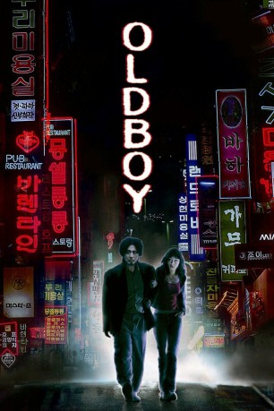

#1265 Oldboy
 
 IMDB-Wertung: 8.4 / 10
IMDB-Wertung: 8.4 / 10  IMDB-TOP-Platzierung: 67
IMDB-TOP-Platzierung: 67  Metascore: 74
Metascore: 74 
15 Jahre. So lange wird Oh Dae-su, ein ganz durchschnittlicher Geschäftsmann und Familienmensch, in einem Ein-Zimmer-Appartment ohne Fenster eingesperrt, nachdem er von unbekannten Gangstern überwältigt und entführt wurde. 15 Jahre ohne jeden menschlichen Kontakt und in völliger Unklarheit darüber, warum und wie lange er festgehalten wird. Aus den Fernsehnachrichten erfährt er vom Mord an seiner Ehefrau, den die Täter ihm in die Schuhe schieben. Als er ebenso unvermittelt, wie er seiner Freiheit beraubt wurde, wieder in diese entlassen wird, stellt ihm sein Entführer die Aufgabe, den Grund für die unaussprechliche Tortur herauszufinden. Doch Oh Dae-su kennt nur ein Ziel: Er will Rache üben. Rache an denen, die sein Leben zerstört, seine Frau getötet und seinen Seelenfrieden für immer auf dem Gewissen haben.
Jahr: 2003
Dauer: 120 Minuten
FSK: 16
Land: Süd-Korea Studio: 3L FilmverleihTonspuren: DTS - ,
Untertitel: Deutsch,
Auflösung: 1080p (1920x832) Größe: 12288 MB
Genre: Action, Drama, Mystery, Thriller
Regisseur: Chan-wook Park
Drehbuch: Garon Tsuchiya, Nobuaki Minegishi, Chan-wook Park, Chan-wook Park, Joon-hyung Lim
Soundtrack: Yeong-wook Jo
Darsteller:
 Min-sik Choi als Dae-su Oh
Min-sik Choi als Dae-su Oh- Ji-tae Yu als Woo-jin Lee
- Hye-jeong Kang als Mi-do
- Jin-seo Yoon als Lee Soo-ah
 Joe Cappelletti als Young Dae-su , uncredited
Joe Cappelletti als Young Dae-su , uncredited Crispin Freeman als Woo-jin Lee , uncredited
Crispin Freeman als Woo-jin Lee , uncredited Sherry Lynn als Mi-do , uncredited
Sherry Lynn als Mi-do , uncredited Michael McConnohie als Dae-su Oh , uncredited
Michael McConnohie als Dae-su Oh , uncredited Stephanie Sheh als Lee Soo-ah , uncredited
Stephanie Sheh als Lee Soo-ah , uncredited Kari Wahlgren als Hypnotist , uncredited
Kari Wahlgren als Hypnotist , uncredited- Dae-han Ji als No Joo-hwan
 Dal-su Oh als Park Cheol-woong
Dal-su Oh als Park Cheol-woong Byeong-ok Kim als Mr. Han
Byeong-ok Kim als Mr. Han- Seung-shin Lee als Yoo Hyung-ja
- Dae-yeon Lee als Beggar
- Kwang-rok Oh als Suicidal Man
- Tae-kyung Oh als Young Dae-su
- Yeon-suk Ahn als Young Woo-jin
- Il-han Oo als Young Joo-hwan
- Su-hyeon Kim als
- Seung-jin Lee als
- Su-kyeong Yun als
- Myeong-shin Park als
- Yi Yong als Delivery Boy
 Mari Devon als Beautician , uncredited
Mari Devon als Beautician , uncredited- Steve Kramer als Newscaster / Cop 1 , uncredited
 Kirk Thornton als Park Cheol-woong , uncredited
Kirk Thornton als Park Cheol-woong , uncredited
Datei: X:\HD-Eastern-Modern(N-Z)\Oldboy (2003, FSK16, 1920x832).mkv seit 12.06.2015
Festplatte: HD Eastern+Western
 Es gibt insgesamt 76 Filme in der Gruppe 'HD-Eastern-Modern(N-Z)'
Es gibt insgesamt 76 Filme in der Gruppe 'HD-Eastern-Modern(N-Z)'